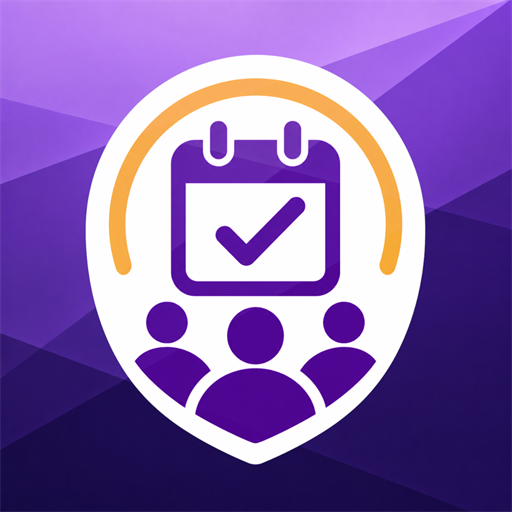

The companion to Member Tools — track callings, interviews, and meeting agendas your whole bishopric shares.
Member Tools shows you the current state — your directory and reports. Leadership Tracker tracks the work behind it: a calling moving from approval to set-apart, who's coming due for an interview, and this week's program. It's the app for a ward bishopric or stake presidency of The Church of Jesus Christ of Latter-day Saints to coordinate the work they share — on each leader's own phone, right next to Member Tools.
Available for Android and iPhone. Free, with no ads and no in-app purchases.
Leadership Tracker has no backend server and collects nothing. Everything you enter is stored on your device — or, if you choose shared mode, in a Google Drive folder that you create and own, shared only with the people you invite. The app connects to your Google account for exactly two purposes:
drive.file permission, which means it cannot see, touch, or list anything
else in your Drive.No data is ever transmitted to the developer or any third party. You still record final callings in LCR, like always — Leadership Tracker just tracks the work of getting there. You can revoke the app's access at any time from your Google Account settings, and your files remain yours in your own Drive. The app also works fully in a device-only mode with no Google account at all.
Privacy Policy · Terms of Service
Questions or feedback? Contact hazard007@gmail.com.
Leadership Tracker is independently developed software. It is not affiliated with, endorsed by, or sponsored by The Church of Jesus Christ of Latter-day Saints. "Member Tools" and "LCR" refer to official Church tools and are used only to describe how this independent app fits alongside them.